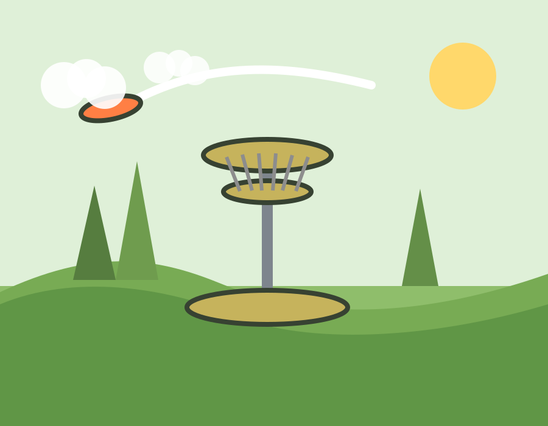

Scratch Page
Disc golf is the hobby I keep coming back to because it feels competitive, social, and outdoorsy all at once. Every round feels like a puzzle with a little pressure, a lot of movement, and plenty of room to improve.

Custom local disc golf artwork made for this page.
I like that no two holes feel the same. One throw might call for power, another might need touch, and the next one forces patience because one bad angle can send the disc into trees.
Disc golf also gives me a reason to be outside. It is active without feeling repetitive, and it is easy to enjoy whether I am playing casually with friends or trying to score well.
My favorite part is watching progress show up over time. It is satisfying when a line that used to feel difficult suddenly becomes repeatable because of practice and confidence.
Jump to Top